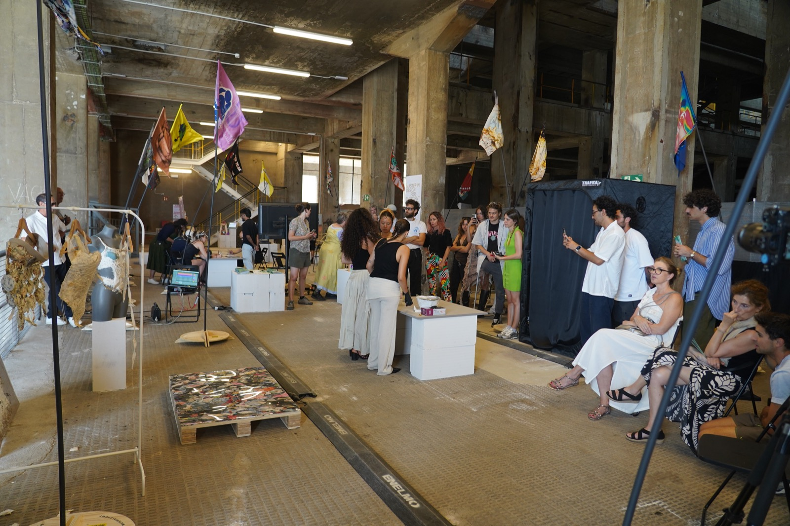
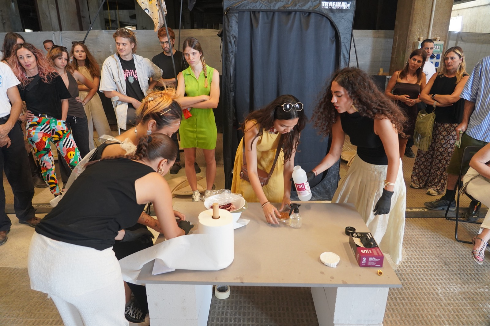
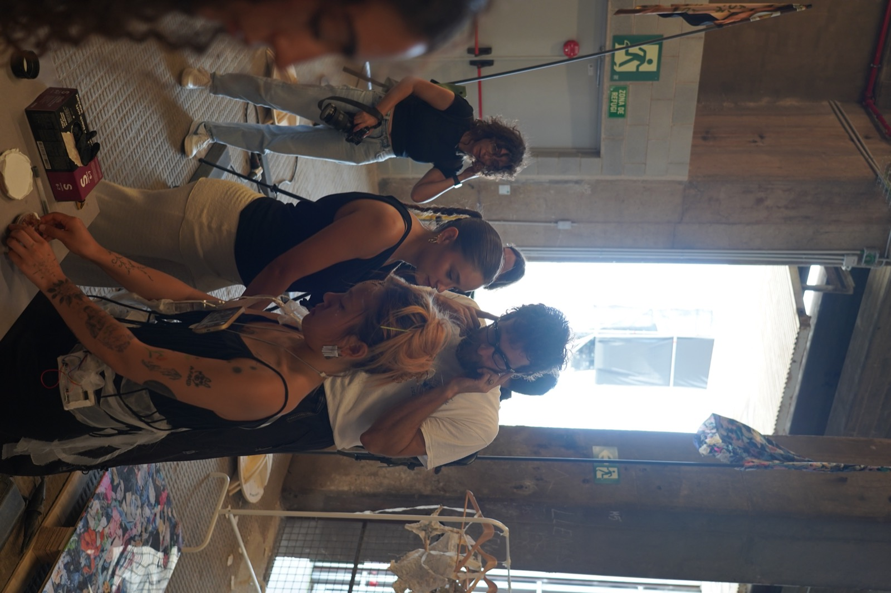
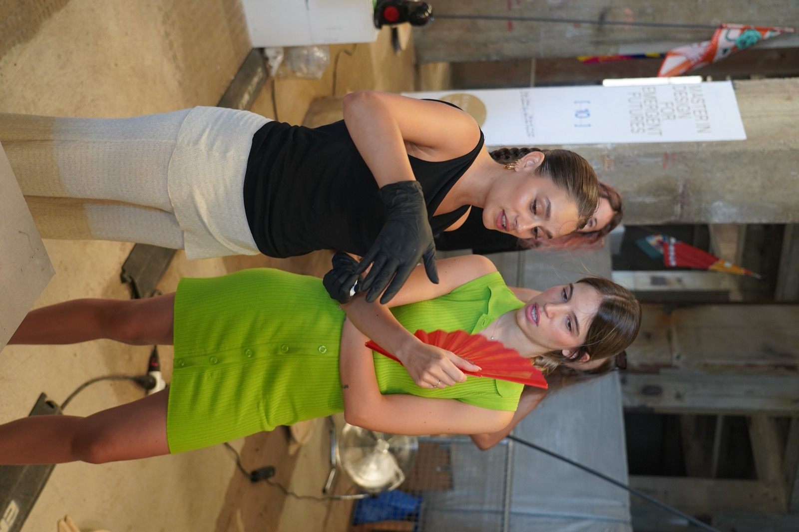
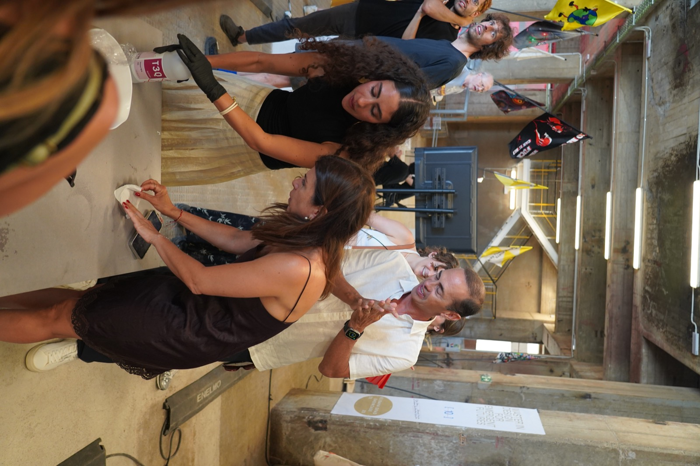

As part of the MDEF Festival exhibition at Les Tres Xemeneies in Barcelona, I developed a hands-on workshop together with Belen Comotto, exploring the relationship between textiles and mycelium through a simple inoculation process.
The workshop introduced participants to the basic principles of growing mycelium on fabric, translating the biological process into an accessible, hands-on activity. Participants were guided through the inoculation of textile samples, allowing them to directly interact with the material and observe how a living organism could colonise and transform a conventional substrate.
The activity extended the research presented in the exhibition beyond observation, turning the installation into an opportunity for participation and knowledge exchange. By working directly with mycelium, participants could experience its growth as an ongoing material process rather than as a finished product.
The workshop was developed as part of the wider exhibition environment, where video, sound, biological materials and physical experimentation came together to create an immersive space for exploring relationships between living systems, materials and design.





Photography by Ardila and Ramon Prat